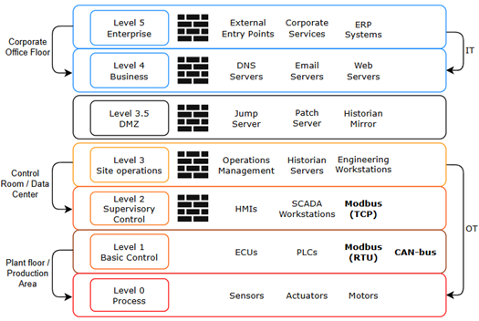

Opinnäytetyö (2026) • Erikoistumisalue: OT-tietoturva
Tutkimukseni keskiössä on teollisuusympäristöjen suojaaminen. Käytän työssäni itse kehittämääni visualisointia Purdue-mallista (PERA), joka auttaa ymmärtämään verkon segmentoinnin merkitystä upotetuissa järjestelmissä.

Kuva 1: Visualisointi teollisuusverkon tasoista ja protokollia koskevista rajapinnoista.
Työssäni pureudun erityisesti seuraaviin kriittisiin kohtiin:
Opinnäytetyö ei ole vain teoriaa, vaan se antaa suosituksia siitä, miten palomuurit (kuvassa mustat tiiliseinät) tulisi konfiguroida estämään sivuttaisliike (lateral movement) IT-verkon ja tuotantoverkon välillä.
Skenaario: Hyökkääjä tekeytyy työnhakijaksi ja lähettää portfolio-linkin kohdeyrityksen insinöörille.
// Hyökkäysvektori
1. Käyttäjä klikkaa "Lataa CV" -painiketta.Tämä korostaa sitä, että ihminen on usein heikoin lenkki. Vaikka teollisuusverkko olisi segmentointu hyvin, saastunut ylläpitokone voi tarjota hyökkääjälle "avaimet käteen" -pääsyn kriittiseen infraan.